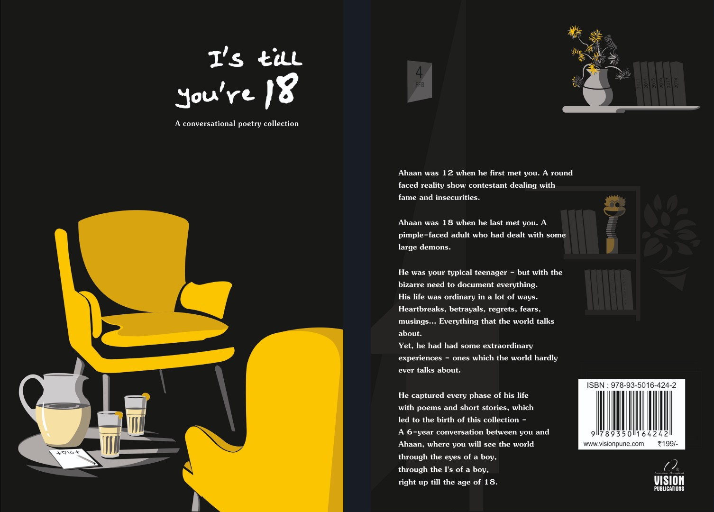

I's till you're 18

Ahaan was 12 when he first met you. A round faced reality show
contestant dealing with fame and insecurities.
Ahaan was 18 when he last met you. A pimple-faced adult who had
dealt with some large demons.
He was your typical teenager - but with the bizarre need to document
everything.
His life was ordinary in a lot of ways. Heart breaks, betrayals,
regrets, fears, musings... Everything that the world talks about.
Yet, he had had some extraordinary experiences - ones which the
world hardly ever talks about.
He captured every phase of his life with poems and short stories,
which led to the birth of this collection - a 6-year conversation
between you and Ahaan,
where you will see the world through the eyes of a boy -
through the I's of a boy -
right up till the age of 18.